delivery(item1) to bobdelivery(item1) to daveneed(item1) to aliceneed(item1) to carolIn order to develop interesting applications in Jason, you will typically need to interact with (and/or visualise) the environment of your Jason project. We will briefly introduce two approaches to solving this problem. The first approach is to use standard Java libraries for developing graphical user interfaces (GUIs). This is the approach typically taken by existing Jason demos available online. The second approach is to implement a REST API in your Jason project to expose your Jason environment to external software. This approach may be preferable if you wish to implement part of your application (e.g. its GUI) in another programming language.
Let us start by updating the buyer_agent agent file to make them behave more dynamically.
src/asl/buyer_agent.asl// src/asl/buyer_agent.asl
/* Initial beliefs and rules */
/* Initial goals */
/* Plans */
+!buy(X) : seller(Y) & not out_of_stock(X)[source(Y)] <- .print(Y, ", I would like to buy ", X); .send(Y, tell, want(X)).
+!buy(X) : true <- .print("it looks like ", X, " is unavailable").
+recieve(X)[source(Y)] : true <- .print(Y, ", thank you for ", X); .print("I have found what I wanted, goodbye everyone!"); leave.
+out_of_stock(X)[source(Y)] : true <- .print("thank you ", Y, ", I will try to find ", X , " elsewhere"); !buy(X).
+leaving(X) : .my_name(X) <- .kill_agent(X).
+leaving(X) : true <- .print("goodbye ", X, "!").
+need(X) : true <- !buy(X).
The initial achievment goal !buy(item1) has been removed and a new plan has been added, telling the agent to adopt an achievement goal !buy(X) if it receives (e.g. from the environment) a new belief need(X).
src/java/hello_world/MarketEnvironment.javaCreate a new (inner) class called MyWindow and initialise a single instance within the init method of the Jason environment.
Also remove the initial delivery(item1) percepts.
package hello_world;
import java.awt.event.ActionEvent;
import java.awt.event.ActionListener;
import javax.swing.JButton;
import javax.swing.JFrame;
import javax.swing.JPanel;
import javax.swing.JTextField;
import jason.asSyntax.ASSyntax;
import jason.asSyntax.Literal;
import jason.asSyntax.Structure;
import jason.asSyntax.parser.ParseException;
import jason.environment.Environment;
public class MarketEnvironment extends Environment {
@Override
public void init(String[] args) {
new MyWindow();
try {
this.addPercept(ASSyntax.parseLiteral("seller(bob)"));
this.addPercept(ASSyntax.parseLiteral("seller(dave)"));
} catch (ParseException e) {
e.printStackTrace();
}
}
@Override
public boolean executeAction(String agName, Structure act) {
try {
Structure leave = ASSyntax.parseStructure("leave");
if(act.equals(leave)) {
this.addPercept(ASSyntax.parseLiteral("leaving(" + agName + ")"));
return true;
}
} catch (ParseException e1) {
e1.printStackTrace();
}
return false;
}
class MyWindow {
JTextField agentTextfield;
JTextField perceptTextfield;
JButton button;
public MyWindow() {
agentTextfield = new JTextField("bob", 15);
perceptTextfield = new JTextField("delivery(item1)", 15);
button = new JButton("Add");
button.addActionListener(new ActionListener() {
public void actionPerformed(ActionEvent e) {
try {
String agent = agentTextfield.getText();
Literal percept = ASSyntax.parseLiteral(perceptTextfield.getText());
addPercept(agent, percept);
} catch (ParseException e1) {
e1.printStackTrace();
}
}
});
JPanel panel = new JPanel();
panel.add(agentTextfield);
panel.add(perceptTextfield);
panel.add(button);
JFrame frame = new JFrame("Add percept");
frame.getContentPane().add(panel);
frame.pack();
frame.setVisible(true);
}
}
}
The main change here is the addition of a new class on Lines 45--79 called MyWindow, which is initialised on Line 21 when the Jason environment is first started.
This MyWindow class provides a simple text input window, implemented using the Java Swing library, allowing users to simulate the addition of percepts to the Jason environment.
Agents will dynamically respond to any simulated percepts as specified in their agent files.
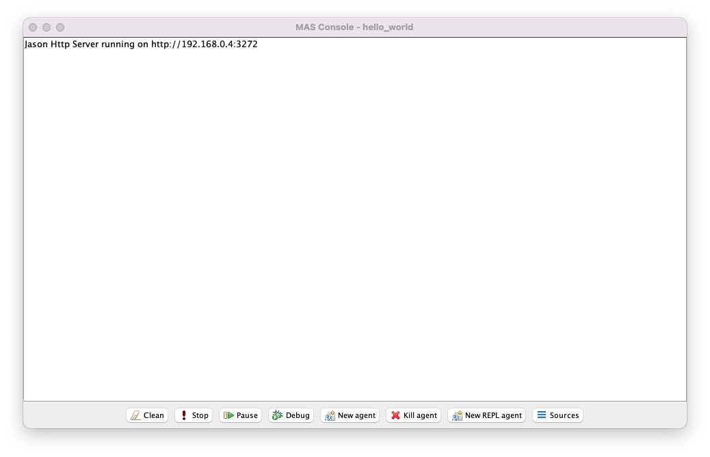
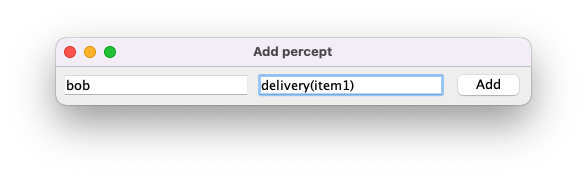
Notice that, in addition to the Jason console, a new text input window called Add percept has been created. The text fields are populated with some default text: the first text field specifies the relevant agent and the second text field specifies the percept. Notice also that the agents have not yet printed anything to the console.
Select Add.
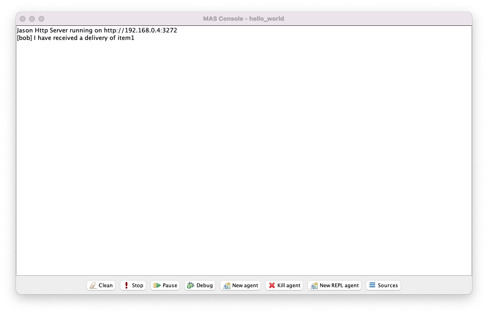
Notice that bob has immediately responded to the event delivery(item1).
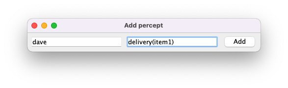
Update the first text field to dave and select Add.
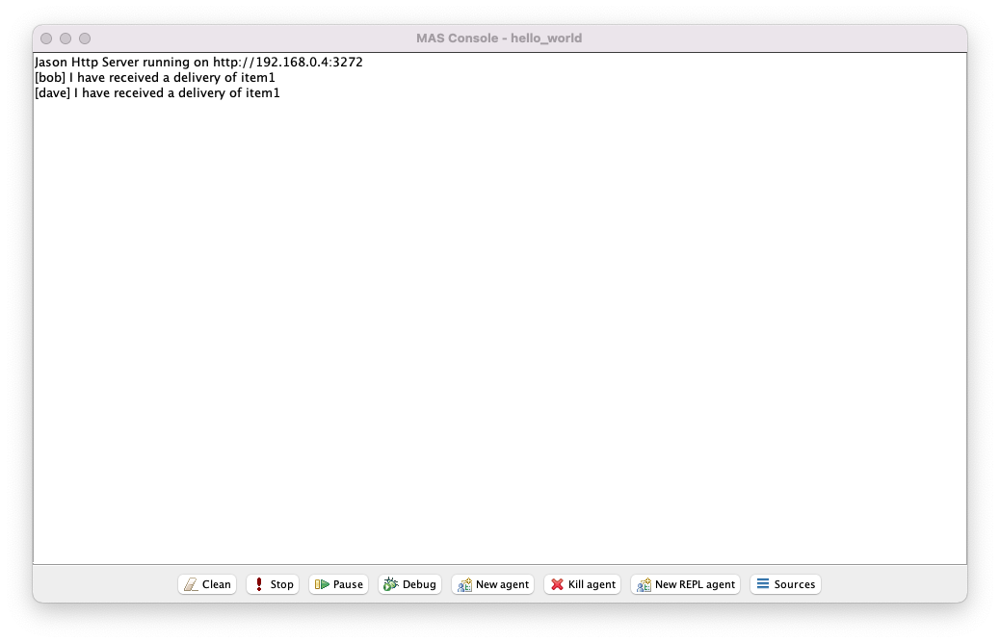
Notice that dave has immediately responded to the event delivery(item1).
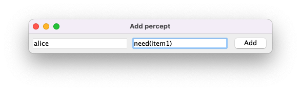
Update the text fields to alice and need(item1), respectively, and then select Add.
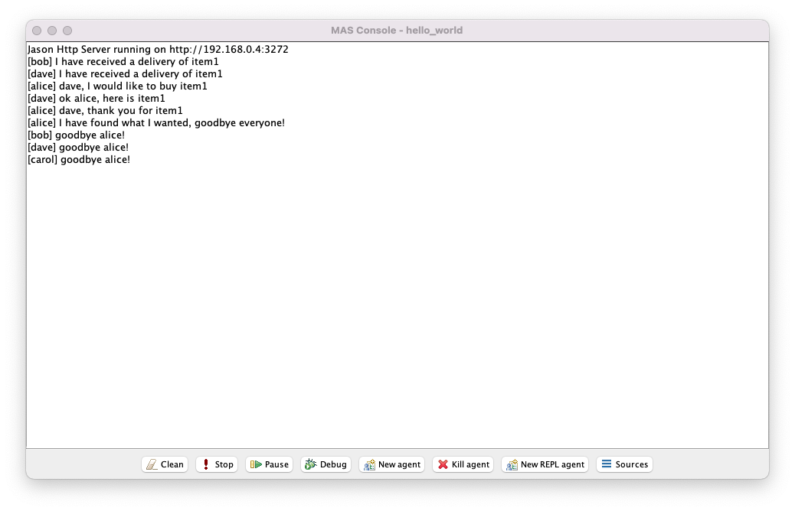
Notice that alice has immediately responded to the event need(item1).
Update the first text field to carol and select Add.
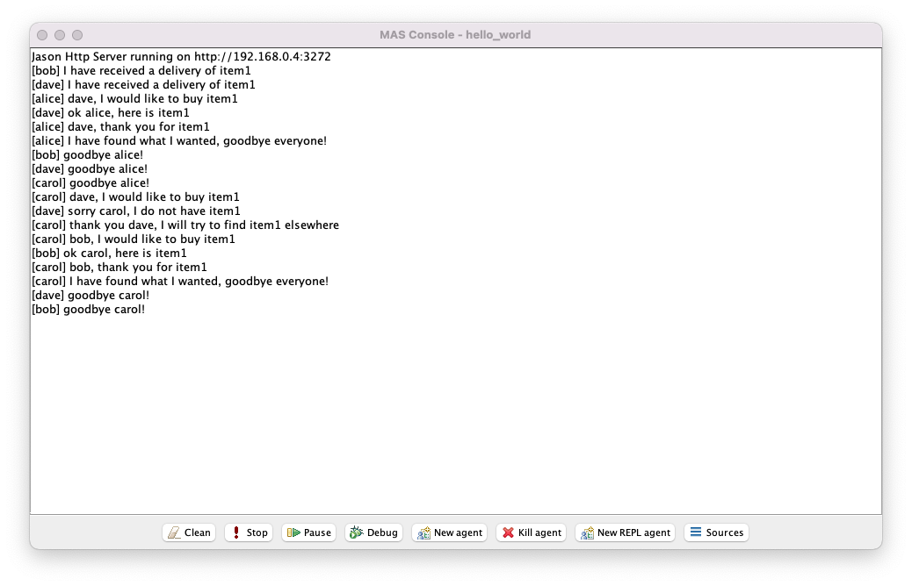
Notice that carol has immediately responded to the event need(item1).
Implementing a REST API within your Jason project allows you to interact with the project's environment (e.g. to simulate new events) using standard HTTP requests (e.g. GET, POST). An example of a library that can be used to implement REST APIs in Java is Javalin.
Javalin's official installation instructions may not be compatible with the Jason plugin for Eclipse.
As a workaround, you can instead build Javalin as a single .jar file with all its dependencies using a package called Maven, and then manually add that .jar file to the build path of your Jason project.
Download Maven from here.
Unzip apache-maven-3.8.4-bin.zip as a directory apache-maven-3.8.4 and remember its location.
Create a directory called javalin and add the following file called pom.xml:
<!-- javalin/pom.xml -->
<project xmlns="http://maven.apache.org/POM/4.0.0"
xmlns:xsi="http://www.w3.org/2001/XMLSchema-instance"
xsi:schemaLocation="http://maven.apache.org/POM/4.0.0
http://maven.apache.org/xsd/maven-4.0.0.xsd">
<modelVersion>4.0.0</modelVersion>
<groupId>io.javalin</groupId>
<artifactId>javalin-latest</artifactId>
<version>3.7.0</version>
<packaging>jar</packaging>
<name>Javalin</name>
<dependencies>
<dependency>
<groupId>io.javalin</groupId>
<artifactId>javalin</artifactId>
<version>3.7.0</version>
</dependency>
<dependency>
<groupId>org.slf4j</groupId>
<artifactId>slf4j-simple</artifactId>
<version>1.7.28</version>
</dependency>
</dependencies>
<build>
<finalName>javalin-latest</finalName>
<plugins>
<plugin>
<groupId>org.apache.maven.plugins</groupId>
<artifactId>maven-compiler-plugin</artifactId>
<version>3.6.1</version>
<configuration>
<source>1.8</source>
<target>1.8</target>
</configuration>
</plugin>
<plugin>
<groupId>org.apache.maven.plugins</groupId>
<artifactId>maven-assembly-plugin</artifactId>
<version>3.1.1</version>
<configuration>
<descriptorRefs>
<descriptorRef>jar-with-dependencies</descriptorRef>
</descriptorRefs>
</configuration>
<executions>
<execution>
<id>make-assembly</id>
<phase>package</phase>
<goals>
<goal>single</goal>
</goals>
</execution>
</executions>
</plugin>
</plugins>
</build>
</project>
You do not need to understand this file.
Inside your javalin directory, run the command:
<path>/<to>/apache-maven-3.8.4/bin/mvn package
Maven will create a file target/javalin-latest-jar-with-dependencies.jar which contains Javalin and all its dependencies.
One option is to create a new directory called lib inside your Jason project, then copy javalin-latest-jar-with-dependencies.jar to the lib directory, and finally right-click on the lib/javalin-latest-jar-with-dependencies.jar file in Eclipse and select Add to Build Path.
Javalin should now be available for use within your Jason project.
Update src/java/hello_world/MarketEnvironment.java as follows:
// src/java/hello_world/MarketEnvironment.java
package hello_world;
import io.javalin.Javalin;
import jason.asSyntax.ASSyntax;
import jason.asSyntax.Literal;
import jason.asSyntax.Structure;
import jason.asSyntax.parser.ParseException;
import jason.environment.Environment;
public class MarketEnvironment extends Environment {
@Override
public void init(String[] args) {
Javalin app = Javalin.create().start(7000);
app.post("/percept/:agent", ctx -> {
String agent = ctx.pathParam("agent");
Literal percept = ASSyntax.parseLiteral(ctx.body());
this.addPercept(agent, percept);
});
try {
this.addPercept(ASSyntax.parseLiteral("seller(bob)"));
this.addPercept(ASSyntax.parseLiteral("seller(dave)"));
} catch (ParseException e) {
e.printStackTrace();
}
}
@Override
public boolean executeAction(String agName, Structure act) {
try {
Structure leave = ASSyntax.parseStructure("leave");
if(act.equals(leave)) {
this.addPercept(ASSyntax.parseLiteral("leaving(" + agName + ")"));
return true;
}
} catch (ParseException e1) {
e1.printStackTrace();
}
return false;
}
}
Line 14 creates a Javalin server that listens on port 7000.
Lines 15--19 tell the Javalin server to accept POST requests on path /percept/<agent-name>.
The body of these POST requests are expected to be Jason percepts, and Line 18 simply adds them to the Jason environment as percepts visible to agent <agent-name>.
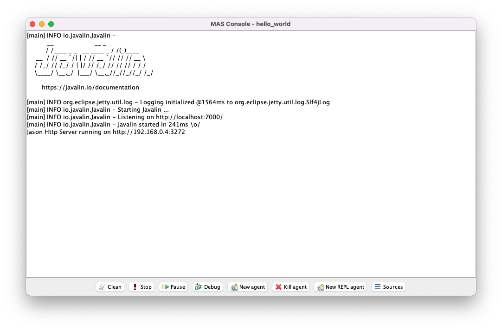
The Javalin banner in the Jason console indicates that Javalin is working correctly. Notice that the agents are running but have not provided any console messages.
delivery(item1) to bobIn a terminal, run the following command:
$ curl localhost:7000/percept/bob --request POST --data "delivery(item1)"
...
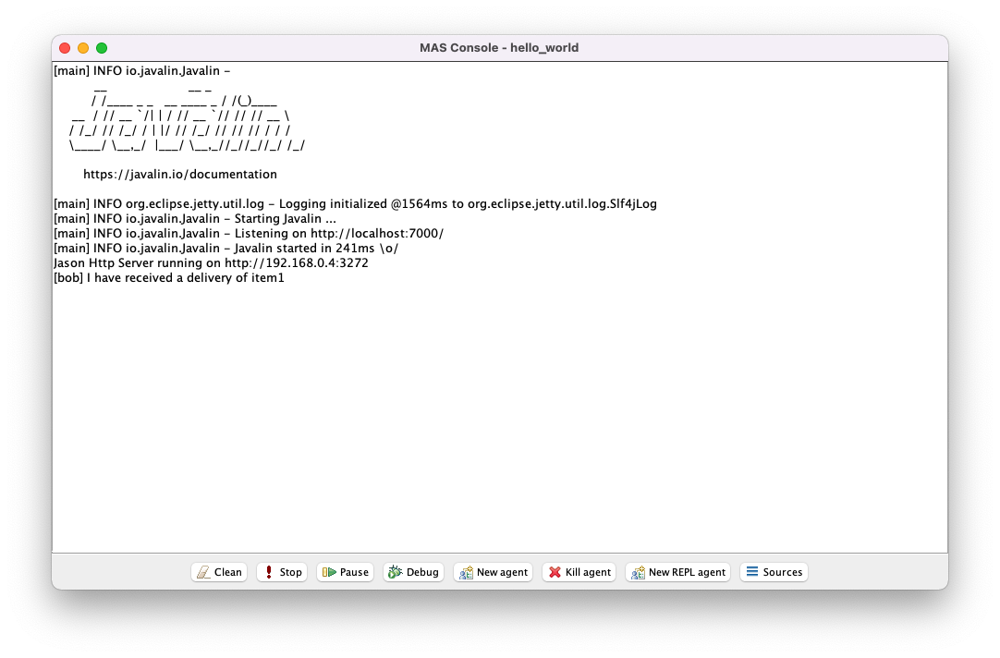
Notice that bob responded to the event as before.
delivery(item1) to daveIn a terminal, run the following command:
$ curl localhost:7000/percept/dave --request POST --data "delivery(item1)"
...
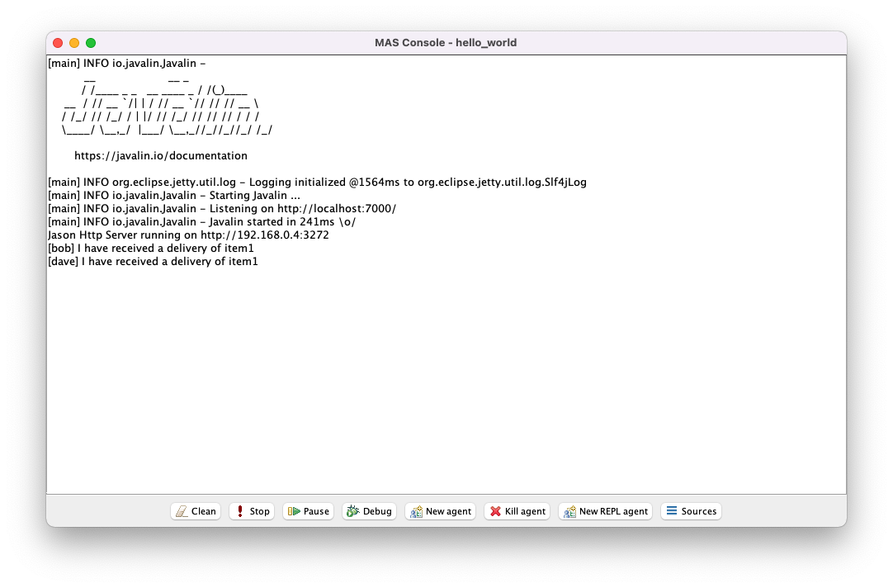
Notice that dave responded to the event as before.
need(item1) to aliceIn a terminal, run the following command:
$ curl localhost:7000/percept/alice --request POST --data "need(item1)"
...
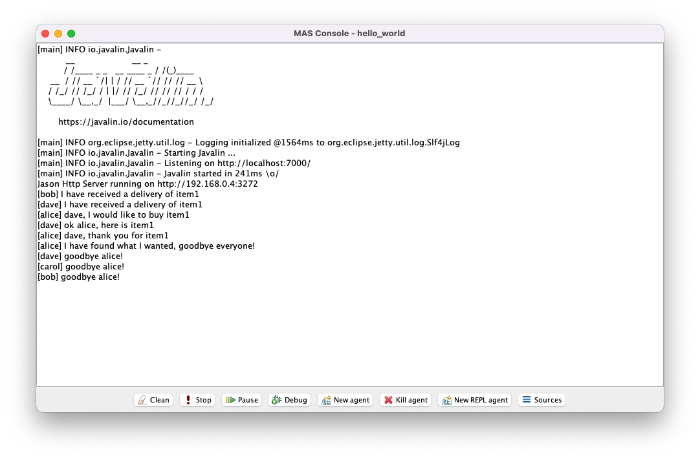
Notice that alice responded to the event as before.
need(item1) to carolIn a terminal, run the following command:
$ curl localhost:7000/percept/carol --request POST --data "need(item1)"
...
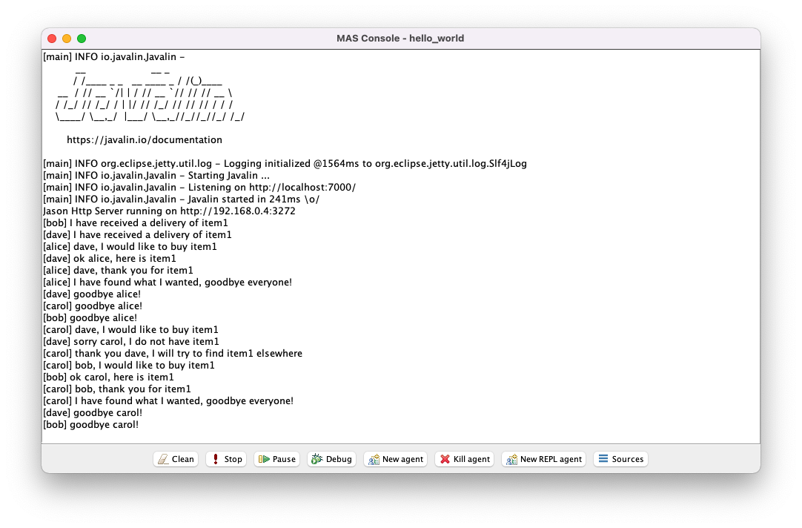
Notice that carol responded to the event as before.